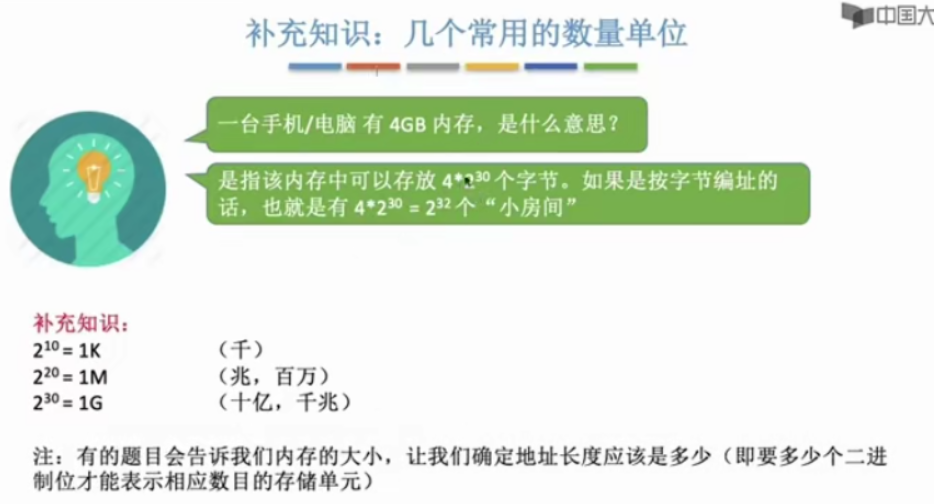

内存的基础知识
内存可存数据。程序执行前需要先放在内存中才能被CPU处理——缓和CPU与硬盘之间的速度矛盾。
内存地址从0开始，每个地址对应一个存储单元。
如果计算机“按字节编址”，则每个存储单元大小为1字节，即1B，即8个二进制位。
如果字长为16位的计算机“按字编址”，则每个存储单元大小为1个字；16个二进制位。

三种策略解决内存装入：
- 绝对装入
- 可重定向装入（静态重定位）
- 动态运行时装入（动态重定位）
绝对装入
在编译时，如果知道程序将放到内存中的哪个位置，编译程序将产生地址的目标代码。装入程序按照装入模块中的地址，将程序和数据装入内存。
绝对装入只适用于单道程序环境。
可重定位装入
静态重定位：又称可重定位装入。编译、链接后的装入模块的地址都是从0开始的，指令中使用的地址、数据存放的地址都是相对于起始地址而言的逻辑地址。可根据内存的当前情况，将装入模块装入到内存中的适当位置。装入时对地址进程“重定位”，将逻辑地址变换为物理地址（地址变换是在装入时一次完成的）。
静态重定位的特点是在一个作业装入内存时，必须分配其要求的全部内存空间，如果没有足够的内存，就不能装入该作业。
作业一旦进入内存后，在运行期间就不能再移动，也不能再申请内存空间。
用于早期的多道批处理操作系统。
动态运行时装入
动态重定位：又称为动态运行时装入。编译、链接后的装入模块的地址都是从0开始的。装入程序把装入模块装入内存中，并不会立即把逻辑地址装换为物理地址，而是把地址转换推迟到程序真正要执行时才进行。因此装入内存后所有的地址依然是逻辑地址。这种方式需要一个重定位寄存器的支持。
采用动态重定位时允许程序在内存中发生移动。
需设置重定位寄存器。
从写程序到程序运行
链接的三种方式
静态链接：在程序运行之前，先将各目标模块及他们所需的库函数链接称一个完成的可执行文件（装入模块），只有不在拆开。
装入时动态链接：将个目标模块装入内存中，边装入边链接的链接方式。
运行时动态链接：在程序执行中需要该目标模块时，才对它进行链接。其优点是便于修改和更改，便于实现对目标模块的共享。
内存管理概念
- 操作系统负责内存空间的分配与回收
- 操作系统需要提供某种技术从逻辑上对内存空间进行扩充
虚拟技术，操作系统的虚拟性 - 操作系统需要提供地址转换功能，负责程序的逻辑地址与物理地址的转换（三种装入方式）
- 保证各进程在自己的内存空间内运行，不会越界。
内存保护可采取两种方法：
方法一：在CPU中设置一对上、下限寄存器，参访进程的上、下限地址。进程的指令要访问某个地址时，CPU检查是否越界。
方法二：采用重定位寄存器（又称基址寄存器）和界地址寄存器（又称限长寄存器）进行越界检查。重定位寄存器中存放的是进程的起始物理地址。界地址寄存器中存放的是进程的最大逻辑地址。
覆盖与交换
引入覆盖技术，用来解决“程序大小超过物理内存总和”的问题
覆盖技术的思想：将程序分为多个段（多个模块）。常用的段常驻内存，不常用的段在需要时调入内存。
内存中分为一个“固定区”和若干个“覆盖区”。
需要常驻内存的段放在“固定区”中，调入后就不再调出（除非运行结束）
不常用的段放在“覆盖区”，需要用时调入内存，用不到时调出内存。
覆盖技术
必须由程序员声明覆盖结构，操作系统完成自动覆盖。
缺点：对用户不透明，增加了用户编程负担。
覆盖技术只用于早期的操作平台，已经退出了历史舞台。
交换技术
交换（对换）技术的设计思想：内存空间紧张时，系统将内存中的某些进程暂时换出外存，把外存中某些已具备运行条件的进程换入内存（进程在内存与磁盘间的动态调度）
暂时换出外语才能等待的进程状态为挂起状态（挂起态，suspend）
挂起态又可以进一步细分为就绪挂起、阻塞挂起两种状态。
(注意：PCB会常驻内存，不会被换出外存。)
连续分配管理方式
连续分配：指为用户进程分配的必须是一个连续的内存空间
单一连续分配
固定分区分配
动态分区分配
- 当有很多空闲分区都能满足需求时，应该选择那个分区进行分配？
把一个新作业装入内存时，需按照一定的动态分区分配算法，把空闲分区表（或空闲分区链）中选出一个分区分配给该作业。
- 如何进行分区的分配与回收操作？
（假设系统采用的数据结构是“空闲分区表”……如何分配）

回收情况1
回收区前有一个相邻的空闲分区
情况2
回收区后有一个相邻的空闲分区
情况3
回收区前后各有一个相邻的空闲分区
合并之前或之后的空闲分区
情况4
回收区的前、后都没有相邻的空闲分区
新增一个表项
（注：各表项的顺序不一定按照地址递增顺序排列，具体的排列方式需要依据动态分区分配算法来确定。）
动态分区分配又称为可变分区分配。这种分配方式不会预先划分内存分区，而是在进程装入内存时，根据进程的大小动态地建立分区，并根据分区的大小证号适合进程的需要。因此系统分区的大小和数目是可变的。
动态分区分配没有内部碎片，但是有外部碎片。
内部碎片，分配给某个进程的内存区域中，如果有些部分没有用上。
外部碎片如果内存中空闲空间的总和本来可以满足某进程的要求，但是由于进程需要的是一整块连续的内存空间，因此这些“碎片”不能满足进程的需求。
可以通过紧凑（拼凑，Compaction）技术来解决外部碎片。
另外，需要对管理空闲分区的数据结构有印象——空闲分区表，空闲分区链。
动态分区分配算法
首次适应算法
算法思想：每次都是从低地址开始查找，找到第一个能满足大小的空闲分区。
如何实现：空闲分区以地址递增的次序排列。每次分配内存时顺序查找空闲分区链（或空闲分区表），找到代销能满足要求的第一个空闲分区。
最佳适应算法
算法思想：由于动态分区分配是是一种连续分配方式，为各进程分配的空间必须是连续的一整片区域。因此为了保证“大进程”到来时能有连续的大片空间，可以尽可能多地留下大片空闲区，即，优先使用更小的空闲区。
如何实现：空闲分区按容器递增次序链接。每次分配内存时顺序查找空闲分区链（或空闲分区表），找到大小能满足要求的第一个空闲分区。
缺点：每次都选最小的分区进行分配，会留下越来越多的、很小的、难以利用的内存块。因此这种方法会产生很多外部碎片。
最坏适应算法
又称最大适应算法（Largest Fit）
为了解决最佳适应算法的问题——即留下太多难以利用的小碎片，可以在每次分配时优先使用最大的连续空闲区，这样分配后圣墟的空闲区就不会太小，很方便使用。
空闲分区按容量递减次序链接。每次分配内存时顺序查找空闲分区链（或空闲分区表），找到大小能满足要求的第一个空闲分区。
缺点：每次都选最大的分区进行分配，虽然可以让范配后留下的空闲区更大，更可用，但这汇总方式会导致较大的连续空闲区被迅速用完。如果之后有“大进程”到达，就没有内存分区可用了。
邻近适应算法
回顾
| 算法 | 算法思想 | 分区排列顺序 | 优点 | 缺点 |
|---|---|---|---|---|
| 首次适应 | 从头到尾找适合的分区 | 空闲分区以地址递增次序排列 | 综合看性能最好。算法开销小，回收分区后一般不需要对空闲分区队列重新排序 | |
| 最佳适应 | 优先使用最小的分区，以保留更多大分区 | 空闲分区以容量递增次序排列 | 会有更多的大分区被保留下来，更能满足大进程需求 | 会产生很多太小的、难以利用的碎片；算法开销发，回收分区后可能需要对空闲分区队列重新排序 |
| 最坏适应 | 优先使用更大的分区，乙方产生太小的不可用的碎片 | 空闲分区以容量递减次序排列 | 可以减少难以利用的小碎片 | 大分区容易被用完，不利于大进程；算法开销大 |
| 邻近适应 | 由首次适应演变而来，每次从上次查找结束为止开始查找 | 空闲分区以地址地址递增次序排列（可排列成循环链表） | 不用每次都从低地址的小分区开始检索。算法开销小 | 会使高地址的大分区也被用完 |
基本分页存储管理的基本概念
连续分配：为用户进程分配的必须是一个连续的内存空间。
非连续分配：为用户进程分配的可以是一些分散的内存空间。
什么是分页存储
将内存空间分为一个个大小相等的分区（比如：每个分区4KB），每个分区就是一个“页框”（页框=页帧=内存块=物理块=物理页面）。每个页框有一个编号，即“页框号”（页框号=页帧号=内存块号=物理块号=物理页号），页框号从0开始。
将进程的逻辑地址空间也分为与页框大小相等的一个个部分，每个部分称为一个“页”或“页面”。每个页面也有一个编号，即“页号”，页号也是从0开始。
操作系统以页框为单位为各个进程分配内存空间。进程的每个页面分别放入一个也狂中。也就是说，进程的页面与内存的页框有一一对应的关系。
重要的数据结构——页表
为了能知道进程的每个页面在内存中存放的位置，操作系统腰围每个进程建立一张页表。
注：页表通常存在PCB（进程控制块）中

计算机中内存块的数量——>页表项中块号至少占多少字节
页表中的页号可以是隐含的，即页号不占用存储空间。
注意：页表记录的只是内存块号，而不是内存块的起始地址！
J号内存块的起始地址=J *内存块大小
如何实现地址装换

在计算机内部，地址是用二进制表示的，如果页面大小刚好是2的整数幂，则计算机硬件可以很快速的把逻辑地址拆分成页号，页内偏移量。
如何计算：
页号=逻辑地址/页面长度（取除法的整数部分）
页内偏移量=逻辑地址%页面长度（取除法的余数部分）
总结：页面大小刚好是2的整数次幂有什么好处？
逻辑地址的拆分更加迅速——如果每个页面的大小为2^kB,用二级制数表示逻辑地址，则末尾K位即为页内偏移量，其余部分就是页号。因此，如果让每个页面的大小为2的整数幂，计算机硬件就可以很方便地得出一个逻辑地址对应的页号和页内偏移量，而无需进行除法运算，从而提升运行速度。
物理地址的计算更加迅速——根据逻辑地址得到页号，根据页号查询页表从而找到哦啊页面存放的内存块号，将二进制表示的内存块号和页内偏移量拼接起来，就可以得到最终的物理地址。
基本地址变换机构
重点理解、记忆基本地址变换机构（用于实现逻辑地址到物理地址转换的一组硬件机构）的原理和流程
通常会在系统中设置一个页表寄存器（PTR），存放页表在内存中的起始地址F和页表长度M。进程未执行时，页表的始址和页表长度放在进程控制块（PCB）中，当进程被调度时，操作系统内核会把他们放到页表寄存器中。